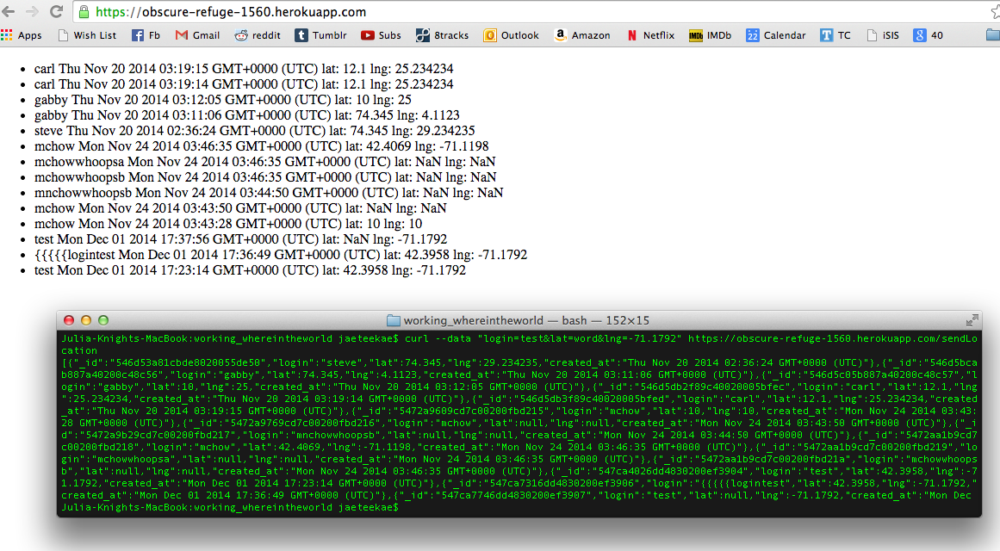
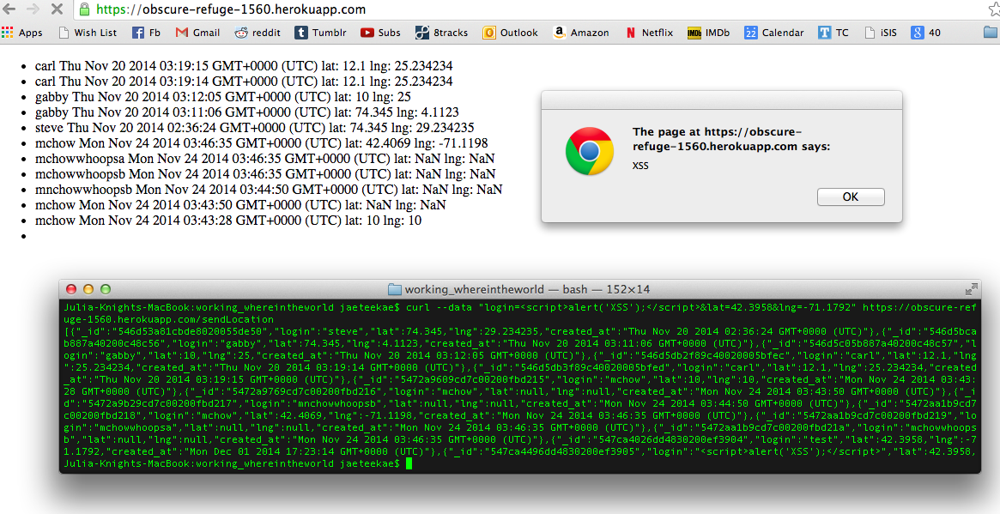
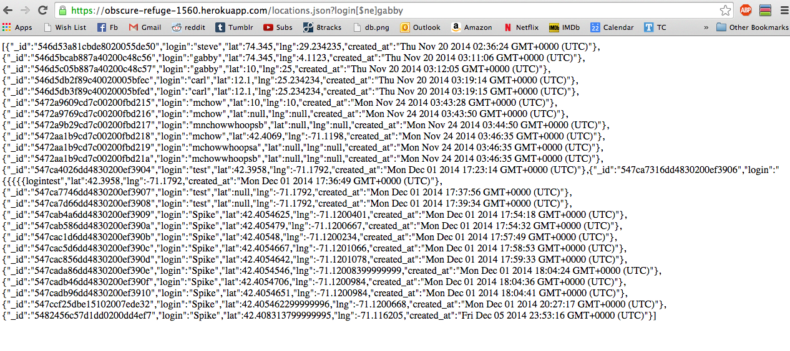

Introduction
The product being assessed is the "Where in the world" server created by Gabby Cella. The server has 4 API's:
- Sending a login, latitude, and longitude to be stored in a database
- Getting all of the check-ins of a given login as JSON
- A homepage that shows the login, latitude, longitude, and time stamp of each check-in
- Getting a JSON string of the current schedule for the red line train
I was hired to assess the security of the server. Through accessing the API's, I was able to make the server function in a way that went against the intended functionality and hurt the experience of any client using the server. I recorded the successful attacks that I made and will provide suggestions for improving the server's security.
Methodology
I began testing the application through "black box" testing. Before I read the source code, I reviewed the documented functionality of each API and hypothesized ways that I might break the app.
In my second round of testing, I analyzed the source code of the application. I picked out specific weaknesses in the code and exploited them through my use of the API's.
The only tools that I used were a plain HTML page and the curl command in the terminal. The HTML page accessed the POST API of the server.
Abstract of Findings
I found 4 security issues that impaired the functionality of the application. When considering the database that holds the information from each check-in, it is possible to send incorrect and incomplete check-ins that still get successfully added to the database. It is also possible to send a check-in such that when a client accesses the application's homepage, they are harassed by pop-ups that were created by the check-in creator and not the application creator. With the API that is supposed to return only the check-ins from one login, it is possible to retrieve all of the check-ins that have been stored. Considering it as a whole, the application can be used by anyone with the application's URL. Use of the application is unrestricted.
Issues Found
- Bad database insertions
- Found using the sendLocation POST API.
- The severity of the issue is low. If the data inserted into the database is not verified closely enough, the validity API is questionable. However, the application still performs.
- The issue is that the sendLocation API inserts a check-in into the database without checking if the latitude or longitude are "NaN", or not a number. The latitude and longitude are parsed with:
var lat = parseFloat(request.body.lat); var lng = parseFloat(request.body.lng);
before checking for undefined entries:
if (login == undefined || lat == undefined || lng == undefined) { response.send(400); }
So if the latitude or longitude is undefined, it becomes NaN before it is checked as undefined. Any check-in with a missing or non-numerical latitude or longitude are still inserted into the database.
- 
- This issue could simply be resolved by checking for:
if (login == undefined || lat == NaN || lng == NaN) { response.send(400); }
- Cross site scripting
- The vulnerability is exploited with the sendLocation POST API, but the scripting shows up on the application's homepage.
- The severity of the issue is high. The homepage is left completely open to however an attacker might want to use it. There could be added scripting for redirecting the page or modifying it in any way.
- The issue is that the client is able to send and insert Javascript into the database through the login field of the POST request. The check-in gets successfully added to the database, and the script gets displayed and runs whenever someone accesses the application homepage. This vulnerability exists because the check-in is inserted without checking for cross site scripting, and the index page just inserts the login into the html.
- 
- The problem could be avoided if the login is checked for cross site scripting before it is entered into the database. Every login could be turned into a string and used with the code:
login = login.replace(/\<|\>|\"|\'|\%|\;|\(|\)|\&|\+|\-/g,"");
to remove potentially problematic characters from the login. If the logins were restricted to alphabetical characters only, then this would not affect the logins from any legitimate check-ins.
- Incorrect Mongo queries
- Found using the locations.json API.
- The severity of the issue is high. It poses a huge confidentiality risk to anyone who submits a check-in.
- The application uses mongoDB for storing the check-in information, and the mongo query for this API is:
collection.find({login:login})
For a mongo query, a $ne searches for all values that do not equal the given value. Using this with the locations.json API returns every single check-in in the database. This allows anyone to access the logins and locations of anyone who submitted a check-in.
- 
- This can be fixed by checking the request before actually querying the mongo database. Like for the last problem, this code:
login = login.replace($,"");
will remove any "$" characters from the login.
- Unlimited cross origin resource sharing
- Found in the sendLocation API.
- The severity of the issue is low. The usage of the application is low right now, but an increase in usage could overwhelm the app.
- This API has cross origin resource sharing enabled universally. This is the problematic line in the code:
response.header("Access-Control-Allow-Origin", "*");
The other screenshots prove that the problem exists, since I was able to access the API from a different origin than the application. Since anyone is able to access this API, it opens the application up for misuse by any user without restriction.
- This problem could be prevented by whitelisting any domain that is allowed to use the API. This could be achieved by keeping a list of approved domains. When the API is used by domain x, it should search the approved list for x. If x is found in the list, then CORS should be enabled for that domain with:
response.header("Access-Control-Allow-Origin", x);
Conclusion
Many of the security issues with the application are due to a lack of checking the data that is sent by the client. I'm sure that there are more problems than the ones I have listed here, so any of the client's data should be thoroughly checked and limited before being used in any way by any API. In general, trusting anything from the client is a huge security risk, so making those changes would greatly improve the security of the application.
Recommended Cost: $1500